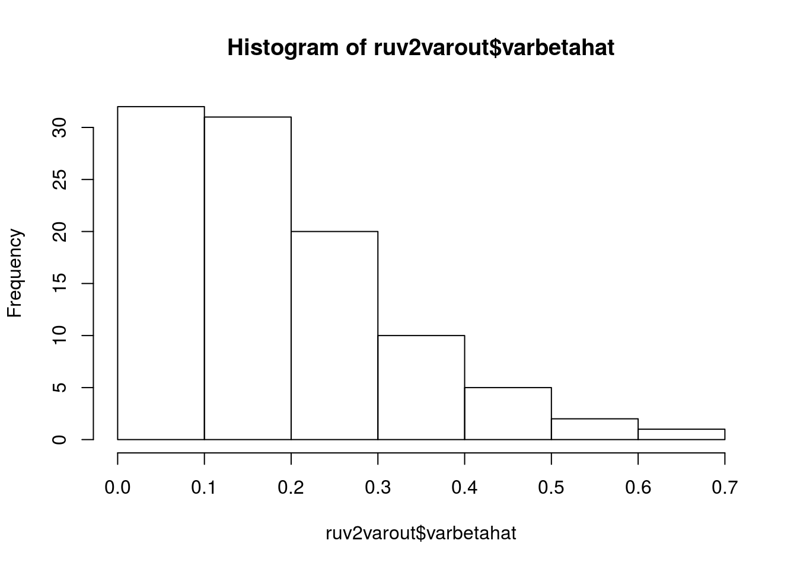
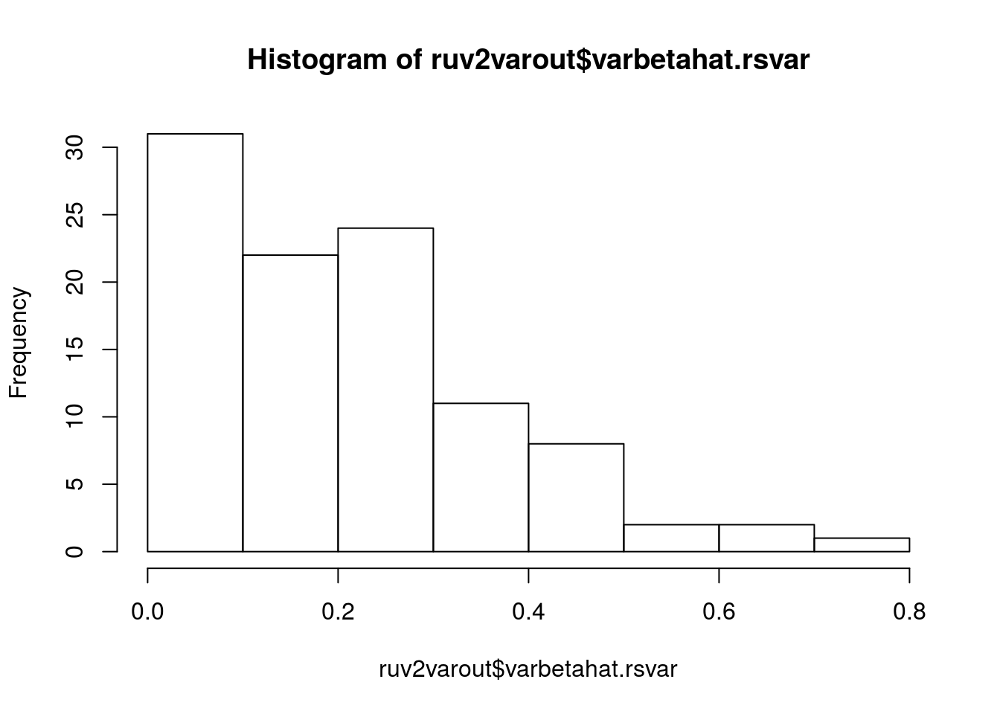
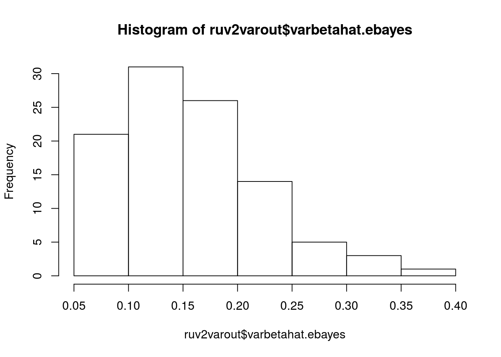
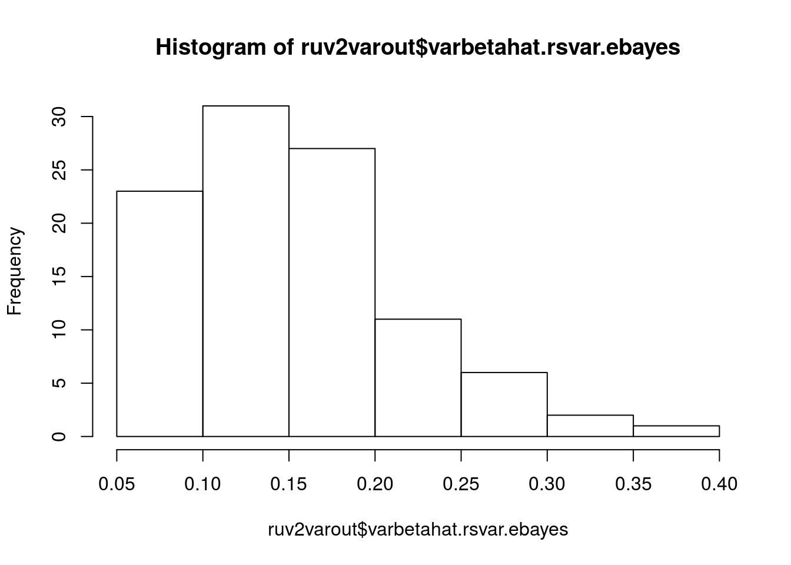
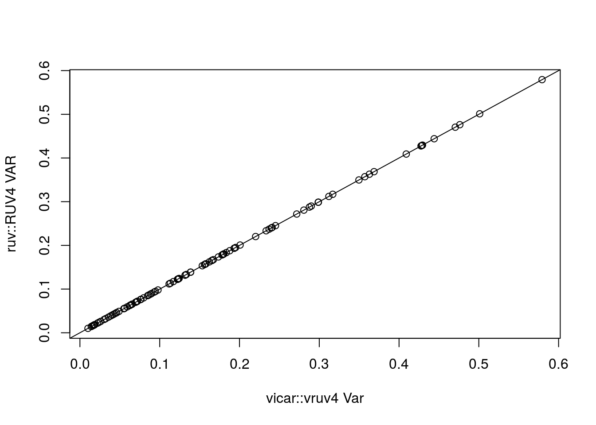
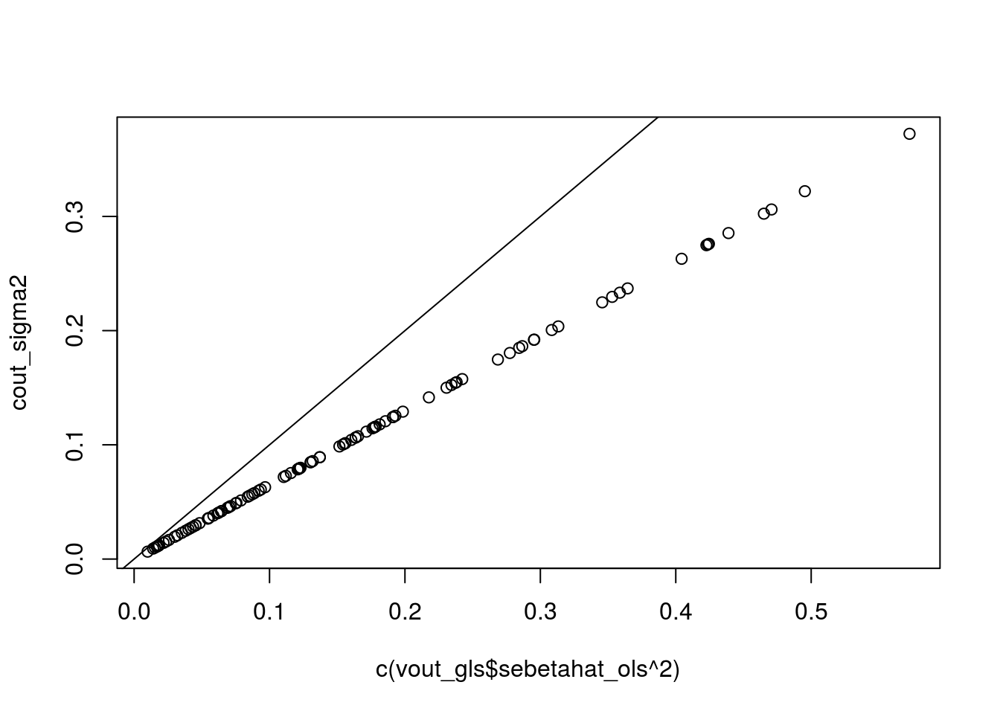

This write-up is meant for me to code up all possible combinations of variance estimation and confounder adjustment approaches.
set.seed(545)
n <- 11 ## number of samples
p <- 101 ## number of genes
q <- 3 ## number of confounders
k <- 2 ## number of observed covariates
m <- 23 ## number of controls
sd_vec <- sqrt(rchisq(p, df = 5) / 5)
is_zero <- rep(FALSE, length = p)
is_zero[1:71] <- TRUE ## about 70% of genes are null
ctl <- rep(FALSE, length = p)
ctl[1:m] <- TRUE
X <- matrix(rnorm(n * k), nrow = n)
B <- matrix(rnorm(k * p), ncol = p)
B[2, is_zero] <- 0
Z <- matrix(rnorm(n * q), nrow = n)
A <- matrix(rnorm(q * p), ncol = p)
E <- matrix(rnorm(n * p), nrow = n) %*% diag(sd_vec)
Y <- X %*% B + Z %*% A + EThe ruv R package provides a few built-in methods for estimating the variances.
ruv2out <- ruv::RUV2(Y = Y, X = X[, 2, drop = FALSE],
ctl = ctl, k = q, Z = X[, 1, drop = FALSE])
ruv4out <- ruv::RUV4(Y = Y, X = X[, 2, drop = FALSE],
ctl = ctl, k = q, Z = X[, 1, drop = FALSE])
ruv2varout <- ruv::variance_adjust(fit = ruv2out)
ruv4varout <- ruv::variance_adjust(fit = ruv4out)Look and see the difference in the different estimates
hist(ruv2varout$varbetahat) ## The default estimate
hist(ruv2varout$varbetahat.rsvar) ## rescaled estimate using control genes
hist(ruv2varout$varbetahat.ebayes) ## limma-shrunk variances
hist(ruv2varout$varbetahat.rsvar.ebayes) ## rescaled estimate using control genes of limma-shrunk variances
Demonstrate that ruv2varout$varbetahat.ebayes is just limmashrunk form OLS variance estimates.
limma_adjusted <- limma::squeezeVar(var = ruv2varout$varbetahat, df = ruv2varout$df)
max(limma_adjusted$var.post - c(ruv2varout$varbetahat.ebayes))## [1] 8.327e-16Re-derive variance scaling by hand
rsvar_hand <- mean(ruv2varout$betahat[ctl] ^ 2 / ruv2varout$sigma2[ctl]) * ruv2varout$sigma2
max(rsvar_hand - ruv2varout$varbetahat.rsvar)## [1] 0You can change the parameter nc.var.correction to be TRUE or FALSE for CATE’s additive correction.
You can also set calibrate to be TRUE or FALSE for median centering and MAD inflation.
cout_pre <- cate::cate.fit(X.primary = X[, 2, drop = FALSE],
X.nuis = X[, 1, drop = FALSE],
Y = Y, r = q, fa.method = "pc", adj.method = "nc",
nc = ctl, nc.var.correction = FALSE, calibrate = FALSE)
cout_post <- cate::cate.fit(X.primary = X[, 2, drop = FALSE],
X.nuis = X[, 1, drop = FALSE],
Y = Y, r = q, fa.method = "pc", adj.method = "nc",
nc = ctl, nc.var.correction = FALSE, calibrate = TRUE)
beta_t_med <- median(cout_pre$beta.t)
adjusted_t <- (cout_pre$beta.t - beta_t_med) / stats::mad(cout_pre$beta.t)
max(cout_post$beta.t - adjusted_t)## [1] 0Note that to just inflate variance by MAD rather than by median, just do MAD of betahat^2 / sigmahat^2. So I am just going to say that we use
cout_sigma2 <- cout_pre$beta.cov.row * diag(cout_pre$beta.cov.col) / n
max(cout_pre$beta.t - cout_pre$beta / sqrt(cout_sigma2))## [1] 4.441e-16## MAD inflation
stats::mad(cout_pre$beta^2 / cout_sigma2, center = 0)## [1] 1.783## Control Gene Inflation
mean(cout_pre$beta[ctl]^2 / cout_sigma2[ctl])## [1] 1.597Does cout_pre contain the unadjusted standard errors from vruv4
It does, though cate uses a different multiplicative factor. Basically CATE does not account for the degrees of freedom.
vout_gls <- vicar::vruv4(Y = Y, X = X, ctl = ctl, k = q, cov_of_interest = 2,
likelihood = "normal", limmashrink = FALSE, include_intercept = FALSE)
vout_ols <- vicar::vruv4(Y = Y, X = X, ctl = ctl, k = q, cov_of_interest = 2,
likelihood = "normal", limmashrink = FALSE, gls = FALSE,
include_intercept = FALSE)First, ruv::RUV4 returns the same result as vicar::vruv4 with gls set to FALSE.
plot(c(vout_ols$sebetahat_ols) ^ 2, ruv4out$sigma2 * ruv4out$multiplier,
xlab = "vicar::vruv4 Var", ylab = "ruv::RUV4 VAR")
abline(0, 1)
Now, the variances of cate::cate and vicar::vruv4 are off by a multiplicative constant.
plot(c(vout_gls$sebetahat_ols ^ 2), cout_sigma2)
abline(0, 1)
cate’s beta.cov.row is the same as vicar’s sigma2 — but scaled differently. Specifically, vicar divideds by n - k - q, while cate divides just by n - k.
vout_gls$sigma2 / cout_pre$beta.cov.row * (n - k - q) / (n - k)## [1] 1 1 1 1 1 1 1 1 1 1 1 1 1 1 1 1 1 1 1 1 1 1 1 1 1 1 1 1 1 1 1 1 1 1 1
## [36] 1 1 1 1 1 1 1 1 1 1 1 1 1 1 1 1 1 1 1 1 1 1 1 1 1 1 1 1 1 1 1 1 1 1 1
## [71] 1 1 1 1 1 1 1 1 1 1 1 1 1 1 1 1 1 1 1 1 1 1 1 1 1 1 1 1 1 1 1Gamma in cate is the same as alphahat in vicar
max(cout_pre$Gamma - vout_gls$alphahat)## [1] 0Z2 in vicar and alpha in cate differ only by a constant factor
vout_gls$Z2 / cout_pre$alpha## [,1]
## Gamma[nc, ]1 2.434
## Gamma[nc, ]2 2.434
## Gamma[nc, ]3 2.434O <- t(qr.Q(qr(X), complete = TRUE))
U <- O[1:2, ] %*% X
U11 <- U[2:2, 2:2, drop = FALSE]
U11 ## Just the last lower-triangular element in the R of the QR decomposition of X## [,1]
## [1,] -2.434Here is how cate calculates beta.cov.col
cout_pre$beta.cov.col## [,1]
## [1,] 2.095solve(crossprod(X) / n)[2, 2] + crossprod(vout_gls$Z2) / U11 ^ 2 ## U11 is lower term in lower triangular matrix of QR decomposition of X.## [,1]
## [1,] 2.095We can get equivalence between cate and vicar by changing n above to n-k.
XZ <- cbind(X, vout_gls$Zhat)
mult_val <- solve(crossprod(XZ))[2,2]
mult_val## [1] 0.1953(solve(crossprod(X) / (n - 2))[2, 2] + crossprod(vout_gls$Z2) / U11 ^ 2 ) / (n - 2) ## Divide by n-k instead of n to get equivalence.## [,1]
## [1,] 0.1953Asymptotically, these variance estimates are the same, but can differ bigly in when the sample size is small.
sessionInfo()## R version 3.3.2 (2016-10-31)
## Platform: x86_64-pc-linux-gnu (64-bit)
## Running under: Ubuntu 16.04.2 LTS
##
## locale:
## [1] LC_CTYPE=en_US.UTF-8 LC_NUMERIC=C
## [3] LC_TIME=en_US.UTF-8 LC_COLLATE=en_US.UTF-8
## [5] LC_MONETARY=en_US.UTF-8 LC_MESSAGES=en_US.UTF-8
## [7] LC_PAPER=en_US.UTF-8 LC_NAME=C
## [9] LC_ADDRESS=C LC_TELEPHONE=C
## [11] LC_MEASUREMENT=en_US.UTF-8 LC_IDENTIFICATION=C
##
## attached base packages:
## [1] stats graphics grDevices utils datasets methods base
##
## loaded via a namespace (and not attached):
## [1] Rcpp_0.12.10 vicar_0.1.6 tools_3.3.2
## [4] digest_0.6.12 annotate_1.48.0 evaluate_0.10
## [7] RSQLite_1.1-2 memoise_1.0.0 nlme_3.1-131
## [10] cate_1.0.4 lattice_0.20-34 mgcv_1.8-17
## [13] Matrix_1.2-8 DBI_0.6 yaml_2.1.14
## [16] parallel_3.3.2 genefilter_1.52.1 stringr_1.2.0
## [19] knitr_1.15.1 IRanges_2.4.8 S4Vectors_0.8.11
## [22] stats4_3.3.2 rprojroot_1.2 grid_3.3.2
## [25] Biobase_2.30.0 ruv_0.9.6 AnnotationDbi_1.32.3
## [28] survival_2.41-2 XML_3.98-1.5 rmarkdown_1.3
## [31] leapp_1.2 limma_3.26.9 sva_3.18.0
## [34] corpcor_1.6.8 magrittr_1.5 splines_3.3.2
## [37] backports_1.0.5 htmltools_0.3.5 MASS_7.3-45
## [40] BiocGenerics_0.16.1 assertthat_0.2.0 svd_0.4
## [43] xtable_1.8-2 esaBcv_1.2.1 stringi_1.1.2This site was created with R Markdown